全到洞里来
2026 年 10 月 8 日
松鼠把秋天一颗一颗搬回家，
雪落下来之前，谁都不许出声。
作品说明 / 老师评语
小叮当的松鼠是最漂亮的！活泼生动的小松鼠搭配亮眼的橙色，把小松鼠灵动的特征一下子就表现出来了。形体也很准确，周围还有小松鼠最喜欢的橡果、蘑菇、树叶，非常适合小松鼠的生活环境。这次的画面很棒，继续加油哟！
共 14 件
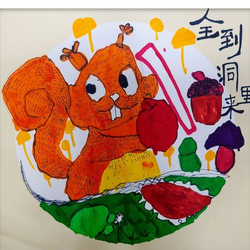
全到洞里来01爱秀 · 彩笔 · 水彩笔 · 纸本 · 2026.10.08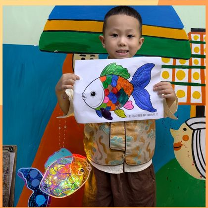
中秋鱼灯02爱秀 · 丙烯马克笔 · 鱼灯 · 2026.09.24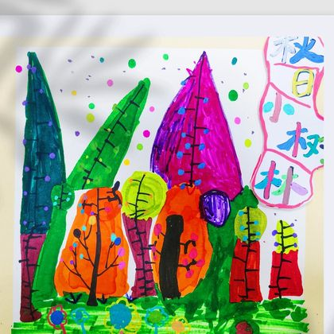
秋日小树林03爱秀 · 丙烯马克笔 · 纸本 · 2026.09.08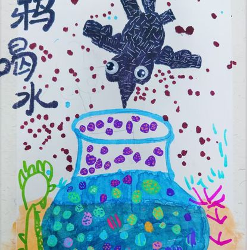
乌鸦喝水04爱秀 · 丙烯马克笔 · 高光笔 · 纸本 · 2026.09.01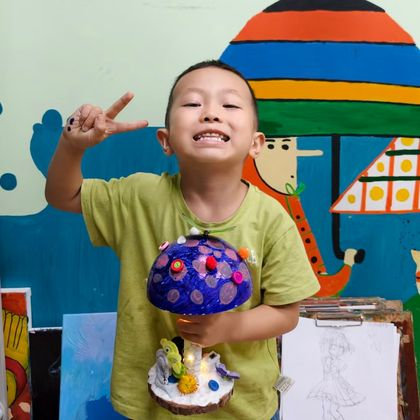
蘑菇灯05爱秀 · 纸塑 · 丙烯马克笔 · 粘土 · 木片 · 2026.07.28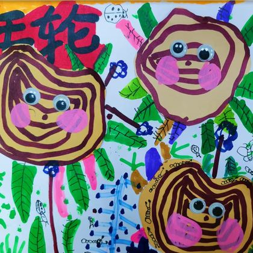
年轮06爱秀 · 丙烯马克笔 · 拼贴 · 活动眼睛 · 纸本 · 2026.07.23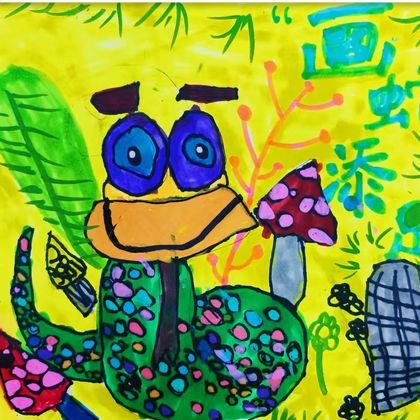
画蛇添足07爱秀 · 马克笔 · 丙烯马克笔 · 纸本 · 2026.07.21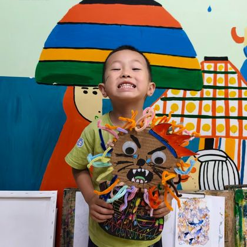
狮子的新发型08爱秀 · 扭扭棒 · 刮画纸 · 拼贴 · 活动眼睛 · 2026.07.16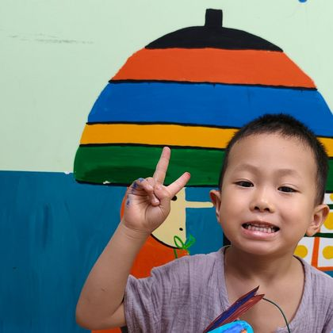
彩叶芋09爱秀 · 丙烯马克笔 · 剪贴 · 纸粘土 · 小花盆 · 2026.07.15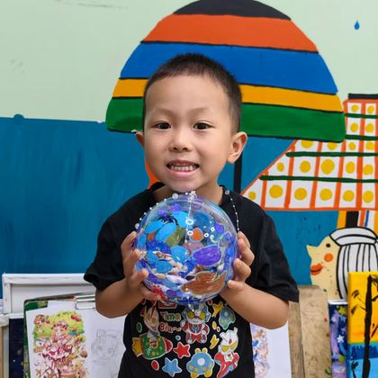
海洋啵啵球10爱秀 · 丙烯马克笔 · 超轻粘土 · 透明球 · 2026.07.09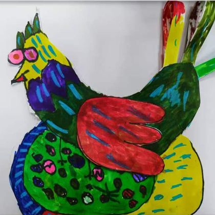
母鸡11爱秀 · 马克笔 · 剪贴 · 纸本 · 2026.07.07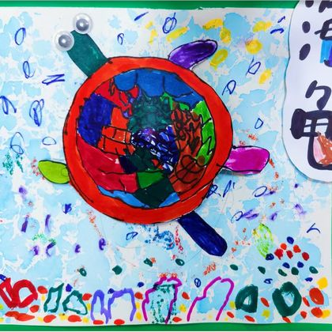
海龟12爱秀 · 水彩 · 丙烯马克笔 · 拼贴 · 活动眼睛 · 纸本 · 2026.06.30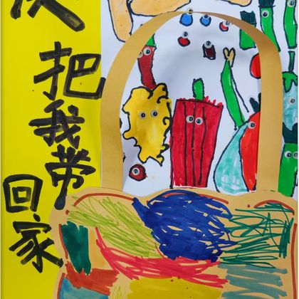
快把我带回家13爱秀 · 马克笔 · 剪贴 · 活动眼睛 · 纸本 · 2026.06.27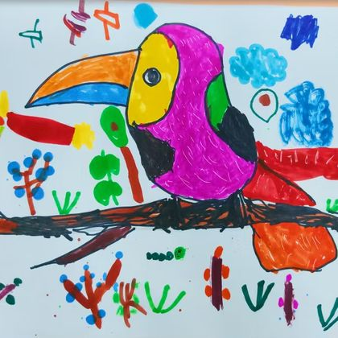
大嘴鸟14爱秀 · 马克笔 · 纸本 · 2026.06.23小叮当的画 · 2026
14 件作品 · 2026
2026 年 10 月 8 日
松鼠把秋天一颗一颗搬回家，
雪落下来之前，谁都不许出声。
作品说明 / 老师评语
小叮当的松鼠是最漂亮的！活泼生动的小松鼠搭配亮眼的橙色，把小松鼠灵动的特征一下子就表现出来了。形体也很准确，周围还有小松鼠最喜欢的橡果、蘑菇、树叶，非常适合小松鼠的生活环境。这次的画面很棒，继续加油哟！
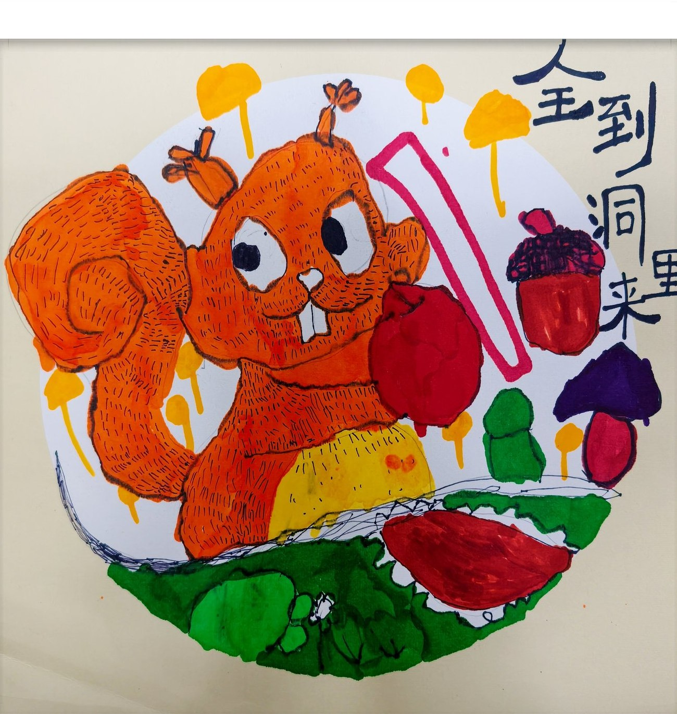
2026 年 9 月 24 日
中秋的鱼灯，是用一整盒颜色点亮的一尾鱼。
灯一亮，整间屋子都是暖黄色的。
作品说明 / 老师评语
小叮当的鱼灯也好漂亮呀！颜色特别丰富，多用点和线条进行装饰，这次涂色规整了很多，好习惯继续保持噢～整体来说鱼灯很精彩，加上暖黄色灯光也更有氛围了，点赞！（先在纸上画好鱼形，再用丙烯马克笔一片片给鳞片上色，最后做成会透光的鱼灯。）
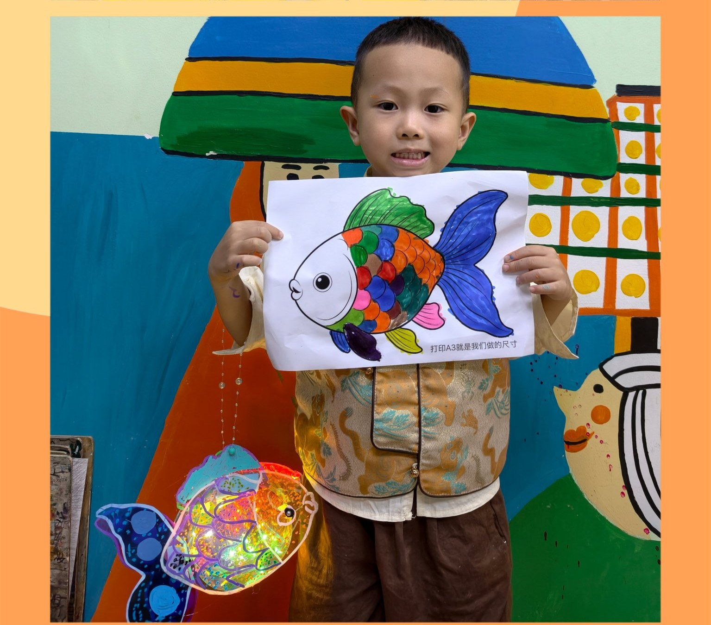
2026 年 9 月 8 日
秋天的树高低不同，颜色也不肯一样，
小果子一颗一颗，落在最亮的那片叶子上。
作品说明 / 老师评语
小叮当这次选择把高低不同的树林放在画面中心，周围搭配多彩背景，还画上了可爱的小果子，画面故事感很强。并且用色大胆，丰富的颜色搭配很亮眼，能感受到小叮当对于秋天色彩的理解。但下次注意树干的画法噢，这次画面的树干其实更像我们的叶脉～
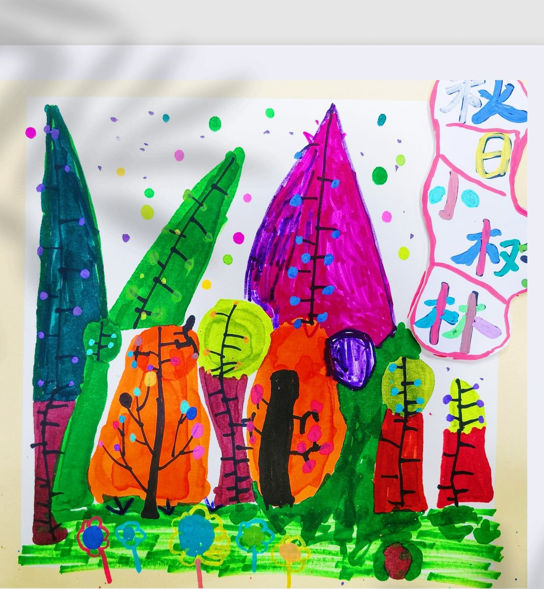
2026 年 9 月 1 日
乌鸦一口一口，把小石子丢进水罐，
水就一点一点，升到了它想喝的地方。
作品说明 / 老师评语
小叮当的画面好丰富呀！情境性很强！上方的乌鸦很生动，有用高光笔处理羽毛，水罐内创新装饰，是五彩斑斓的小石头，地面选择用小草装饰，更有自然的环境氛围，就是小草有些太“简约”了，下次可以稍微刻画一下噢，这次画面整体还不错！点赞！
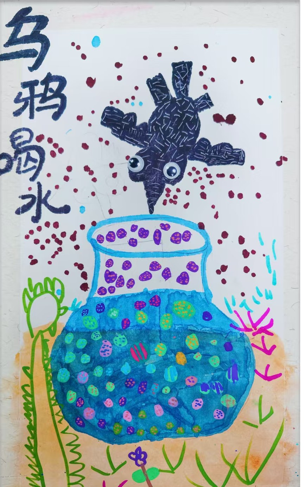
2026 年 7 月 28 日
蓝色的蘑菇灯，点着几颗红色的小圆点，
底座上还藏着一只自己搓的小蜗牛。
作品说明 / 老师评语
小叮当的蘑菇灯是蓝色的～搭配红色圆点，冷暖搭配色彩很亮眼，蘑菇根部小叮当还用粘土搓了一个小蜗牛呢～动手能力真不错，而且整个过程保持足够的耐心与专注，是个好习惯～继续加油哟～
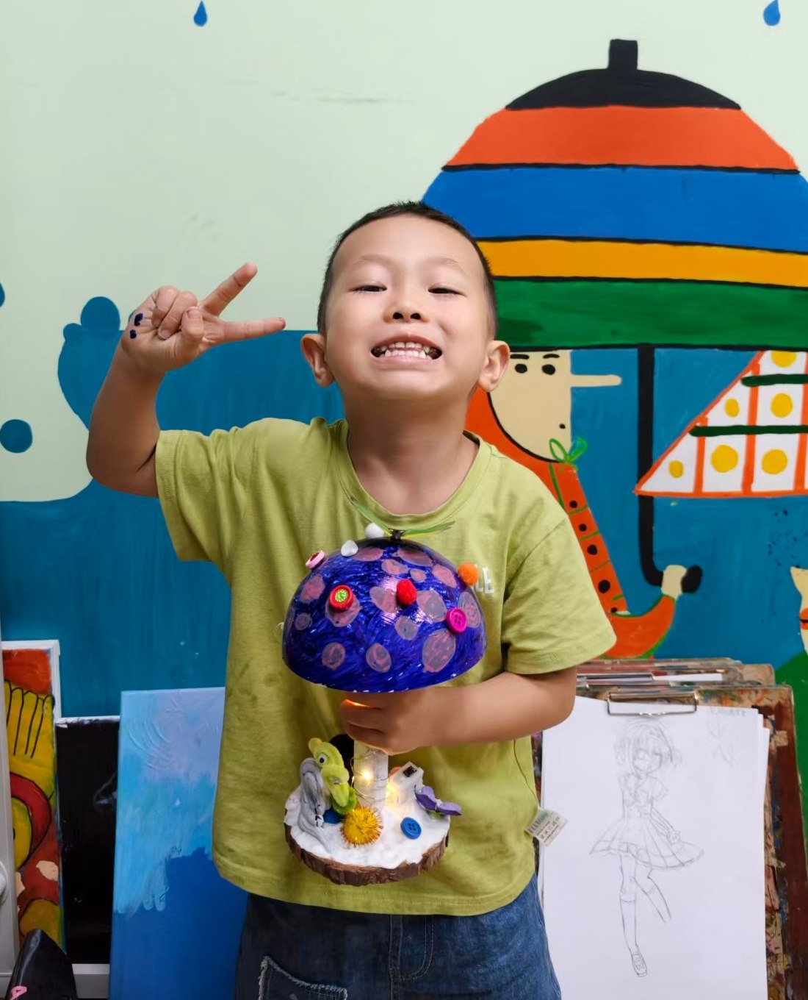
2026 年 7 月 23 日
一圈一圈，是大树替自己记下的年岁，
小虫子绕着它飞，叶子一片一片地绿。
作品说明 / 老师评语
本次课堂我们一起探索了关于年轮的秘密，小叮当也在愉快的和大家互动分享。在画面上，小叮当也学习用不同颜色的树叶装饰树墩，虽然刚开始对树叶的画法不太熟悉，但在示范过后也可以快速上手，并且添加叶脉的细节。周围还有各种可爱的小昆虫，整幅画面的生机更加盎然！这次画面效果非常丰富，真棒！
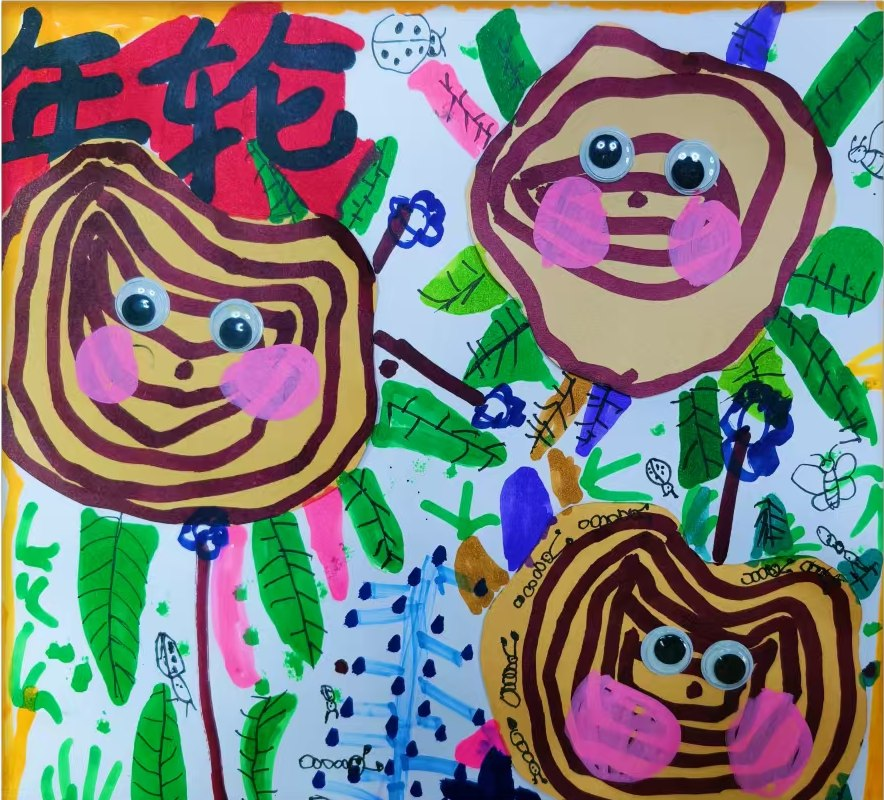
2026 年 7 月 21 日
蛇身上点满了花斑，像一小片会走的草地，
它已经在叶子和蘑菇中间住下来了。
作品说明 / 老师评语
这节课我们从成语故事——“画蛇添足”出发，小叮当知识储备很棒呢！课上和我们一起分享了“画蛇添足”的故事，点赞！绘画过程中小叮当也是利用一系列的绿色装饰了画面，而且小蛇身上的斑点色彩更丰富，周围还装饰了自然界的植物，很符合蛇的生活环境，棒棒哒！
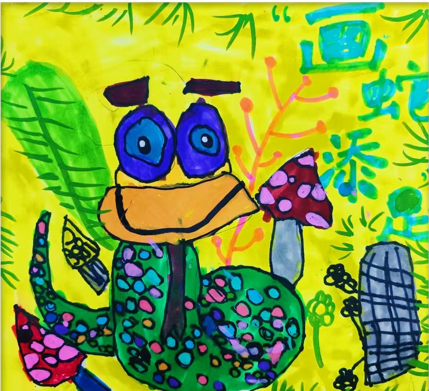
2026 年 7 月 16 日
扭扭棒一根一根插上去，
狮子的新发型，比它的脾气还张扬。
作品说明 / 老师评语
本次课程我们学习了威武的狮子，利用扭扭棒为狮子做出了漂亮的新发型，同时也锻炼到了小手的协调能力，小叮当的狮子发型很丰富噢～下面身体部分就采用刮画纸做出彩色纹理，利用线条来进行装饰，还给狮子制作了皇冠，更霸气了，继续加油哟～
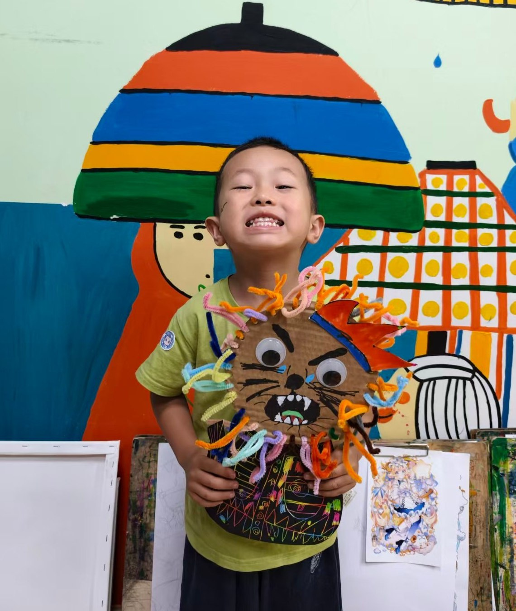
2026 年 7 月 15 日
彩叶芋把蓝色穿在最外面，
心形的叶子里还藏着一小片紫。
作品说明 / 老师评语
这节课我们认识了一种特别的植物——彩叶芋，通过图片我们也发现很多漂亮的色彩搭配，小叮当的彩叶芋以蓝色为主，搭配紫色、棕色，非常大胆的配色，而且和小花盆也有颜色的呼应呢～同时也学会了桃心形状的画法，从最初需要老师辅助到自己可以独立完成，也是小叮当的收获～表扬表扬～
2026 年 7 月 9 日
把一个海洋装进透明的球里，
小鱼的尾巴一摆，蓝色就晃了一晃。
作品说明 / 老师评语
小叮当的海洋世界好丰富呀！整体以蓝色调为主，各色的珊瑚，海草，还有蓝色的泡泡，海底氛围感拉满！有意思的是小叮当还用粘土捏了小鱼、海星，甚至还有海蛇！太有创意啦，这次的手工做的非常不错！棒棒哒～
2026 年 7 月 7 日
母鸡把蓝、黄、绿都穿在身上，
翅膀留一抹红，站在纸上也不肯安静。
作品说明 / 老师评语
小叮当这节课的状态真棒！现在涂色越来越规整了，都很少突出形体，并且在勾线过程中的线条也更加的流畅自然，我们小叮当进步啦～这次的母鸡形象大胆搭配蓝、黄、绿，同时翅膀又选用红色，让画面色彩对比十分的强烈抓人眼球。期待小叮当下一次的精彩表现～
2026 年 6 月 30 日
海龟把整片海驮在背上，
蓝的水、红的壳，慢慢往前爬。
作品说明 / 老师评语
小叮当表现出了海龟的圆润外形，龟壳纹路刻画细致，线条工整有层次。大胆搭配红绿蓝对比色，海底珊瑚、海草等装饰完整。整体画面构图饱满，色彩搭配意识很棒，棒棒哒～
2026 年 6 月 27 日
袋子里装着红辣椒、小葱和土豆，
它们挤在一起，玩一个躲猫猫的游戏。
作品说明 / 老师评语
小叮当的购物袋里好丰富呀！有红彤彤的辣椒、高低不同的小葱、圆乎乎的土豆，在认识到多多蔬菜的同时，这节课我们也学习了如何用遮挡关系来体现画面，小叮当的作品也有在很好的利用遮挡关系！这节课表现棒棒的，继续加油哟～
2026 年 6 月 23 日
大嘴鸟站在树枝上，嘴比身子还长，
它把红色都收进羽毛，等一场雨停。
作品说明 / 老师评语
小叮当第一次见面，在新的环境融入课堂超快，课上会和大家一起交流分享。画面中小叮当是第一个尝试跳出大嘴鸟经典黑色外形的，选择用红色系来进行色彩搭配，所以画面整体颜色非常丰富却不显杂乱，背景的小花小草很有个性特点，第一次的画面效果非常棒！好状态继续保持哟！
画会继续增加，时光也是。